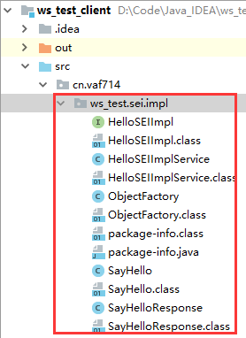
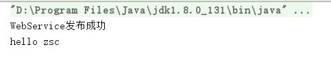
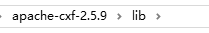

etest开发方式：
- JDK 1.6 +
- 框架：CXF 等
开发步骤：
- 开发服务端
- 开发客户端
利用 JDK 开发 WebService
-
开发服务端
-
新建类作为 SEI ，类加注解 @WebService，方法上加注解 @WebMethod（如果使用接口，那么在接口上两个注解都要加，而实现类只需要加 @WebService 即可）
-
HelloSEI 接口
import javax.jws.WebMethod; import javax.jws.WebService; @WebService public interface HelloSEI { @WebMethod String sayHello(String name); } -
HelloSEI 实现类 HelloSEIImpl
import cn.vaf714.ws_test.sei.HelloSEI; import javax.jws.WebService; @WebService public class HelloSEIImpl implements HelloSEI { @Override public String sayHello(String name) { System.out.println("hello " + name); return "Hello I'm WebService Server"; } }
-
-
main 方法内发布该接口
import cn.vaf714.ws_test.sei.impl.HelloSEIImpl; import javax.xml.ws.Endpoint; public class Startup { public static void main(String[] args) { String address = "http://localhost:8989/ws_test/hellosei"; Endpoint.publish(address, new HelloSEIImpl()); System.out.println("WebService发布成功"); } }
-
-
开发客户端
-
使用 JDK 自带的工具（wsimport）根据 webService 的 url?wsdl（也可是本地 wsdl 文件） 生成代码到客户端目录
C:\Users\Acer>d:D:\>cd D:\Code\Java_IDEA\ws_test_client\src D:\Code\Java_IDEA\ws_test_client\src>wsimport -encoding utf-8 -keep http://localhost:8989/ws_test/hellosei?wsdl可以看到生成的文件
 -
调用 ws 的方法， 有一个类（wsdl 定义）是用于创建发布的 SEI 接口的工厂，利用它创建出 SEI 后，再调用 SEI 里发布的方法即可。
import cn.vaf714.ws_test.sei.impl.HelloSEIImpl; import cn.vaf714.ws_test.sei.impl.HelloSEIImplService; public class Startup { public static void main(String[] args) { HelloSEIImplService service = new HelloSEIImplService(); HelloSEIImpl helloSEI = service.getHelloSEIImplPort(); String result = helloSEI.sayHello("zsc"); System.out.println(result); } }
-
-
运行结果
-
客户端

-
服务端

-
使用 cxf 开发
直接将 cxf 目录 lib 里的 jar 包加入项目即可，生成客户端代码要使用 cxf 目录 bin 目录里的 wsdl2java.bat 工具（使用 idea 可以配置好 cxf 目录，包右键直接生成客户端代码）
